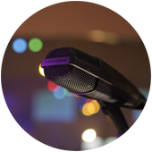
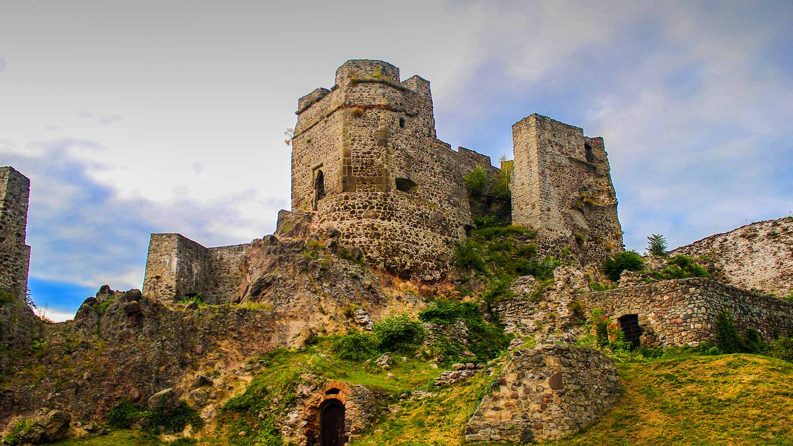
Lokálna televízia mesta Levice
Správy, šport a verejný život v jednom modernom obraze
Levická televízia prináša spravodajstvo, publicistiku, záznamy mestského zastupiteľstva a video archív pre divákov v Leviciach aj online.
Video
Aktuálne relácie a archív v prehľadnom video hube
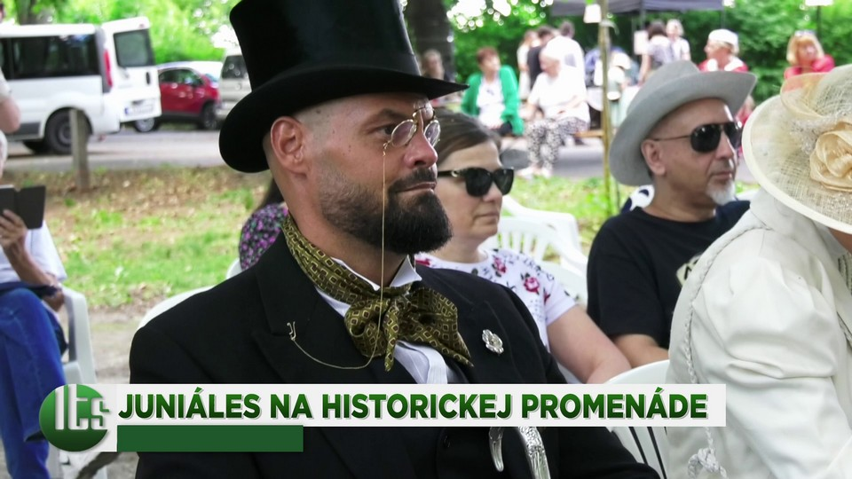
playJuniáles 2026
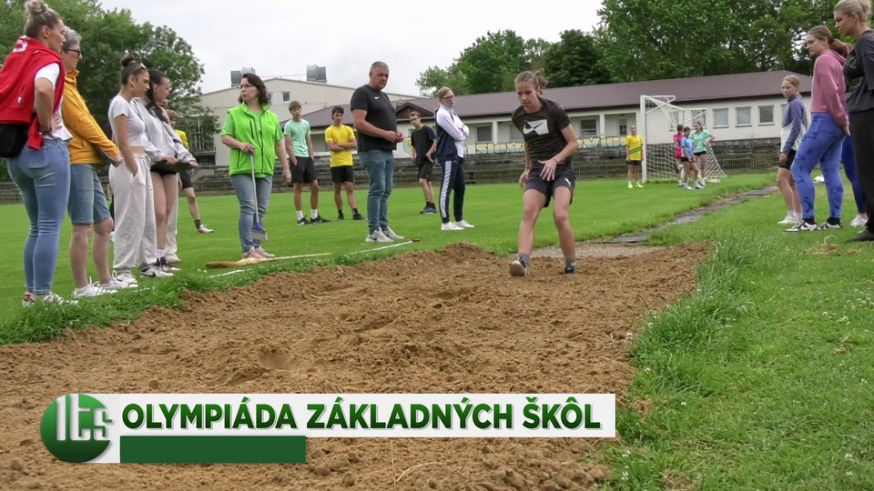
playOlympiáda základných škôl 2026
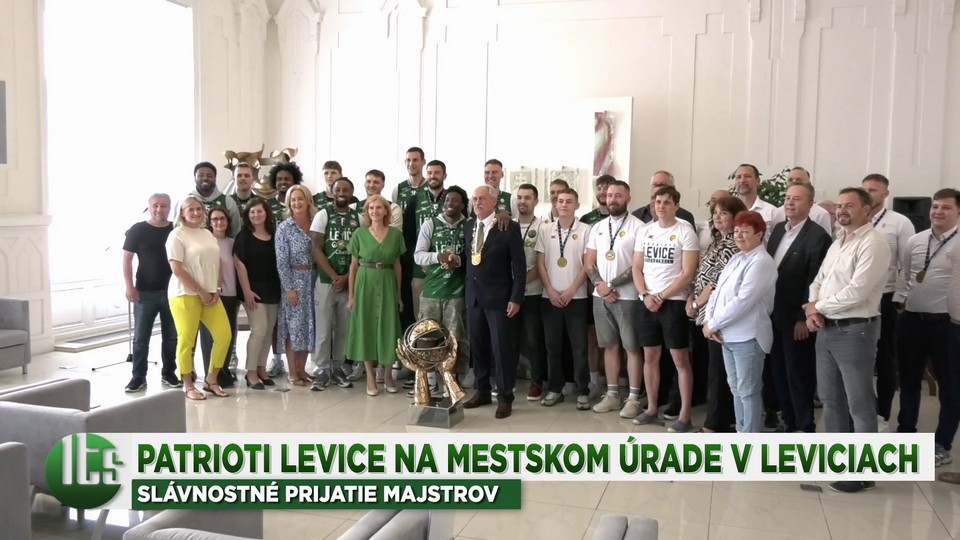
playPatrioti Levice na mestskom úrade - slávnostné prijatie 2026
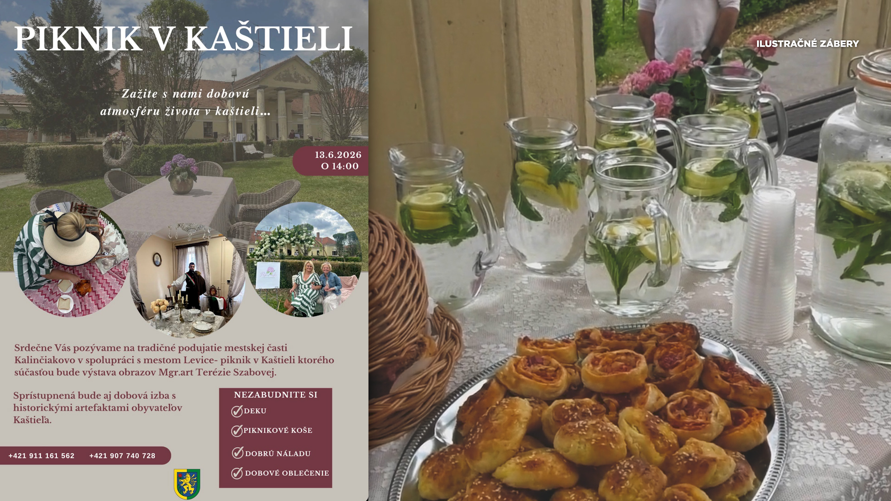
playPiknik v kaštieli - pozvánka
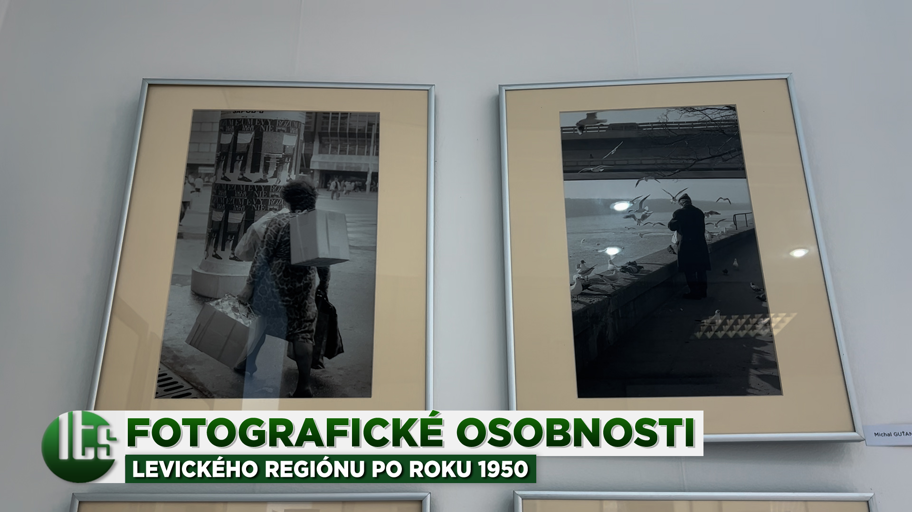
playFotografické osobnosti levického regiónu po roku 1950
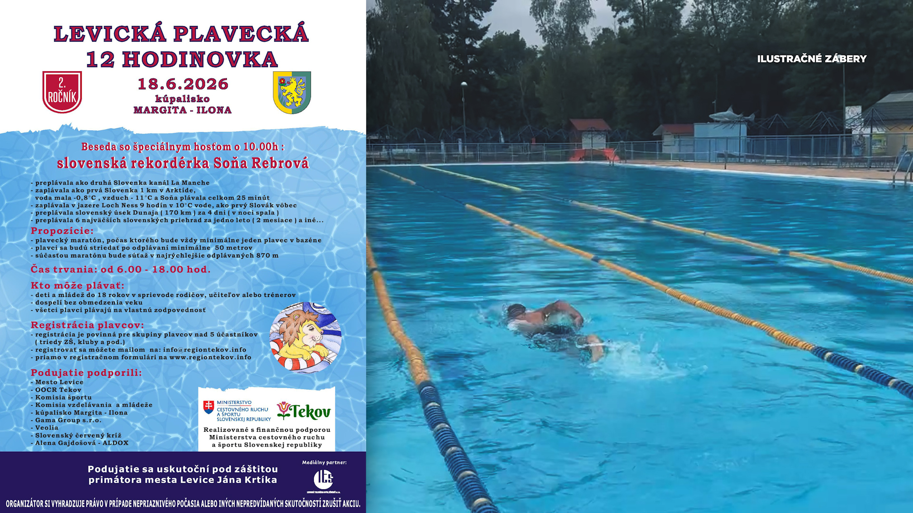
playLevická plavecká 12-hodinovka - pozvánka
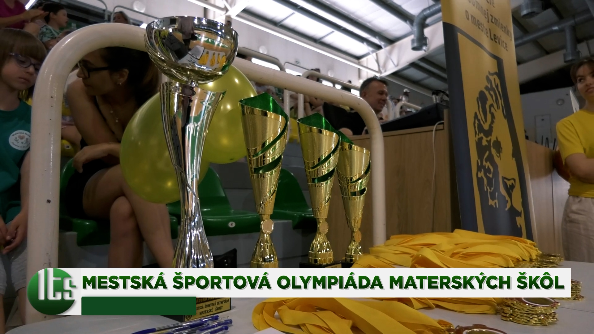
playMestská športová olympiáda materských škôl
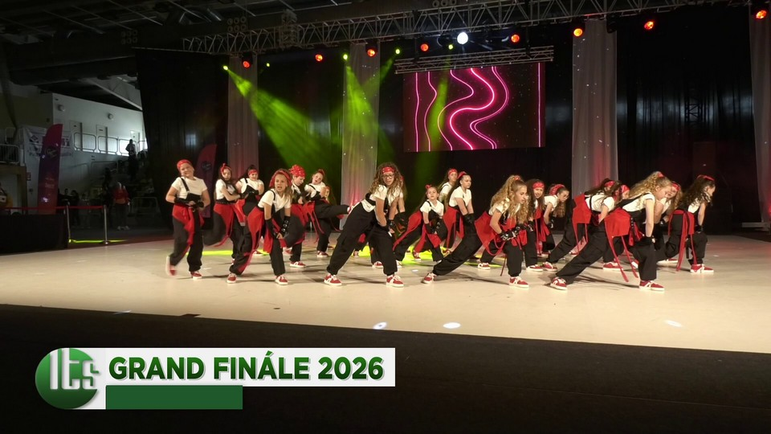
playGrand finále 2026
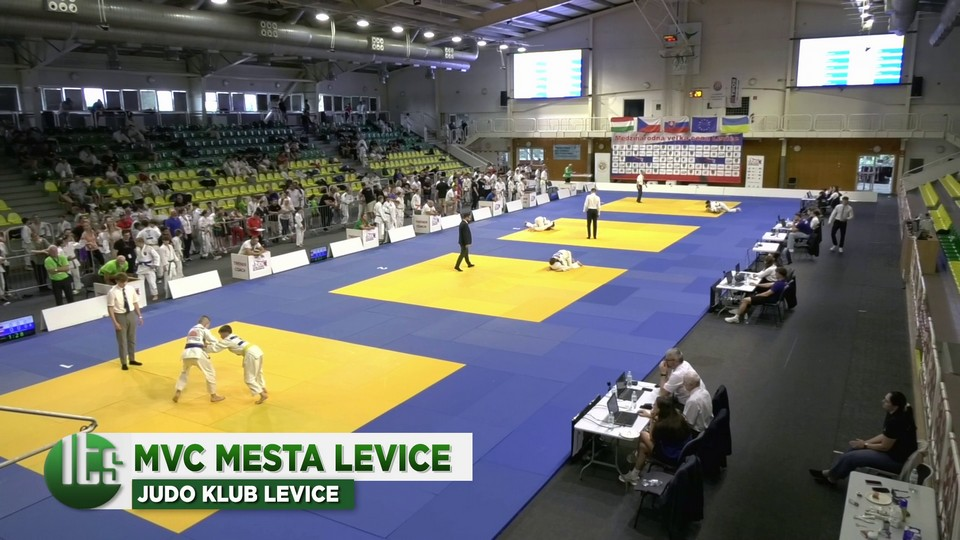
playMVC Mesta Levice 2026 - Judo klub Levice
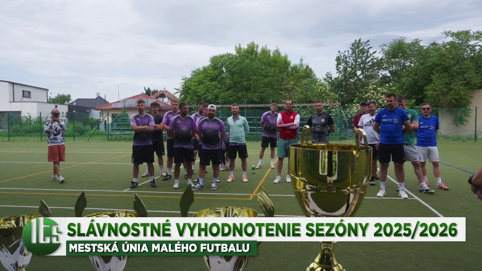
playSlávnostné vyhodnotenie sezóny 2025-2026 MÚMF
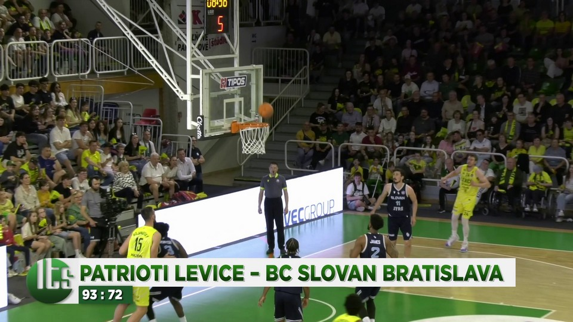
playPatrioti Levice – BC Slovan Bratislava 93:72
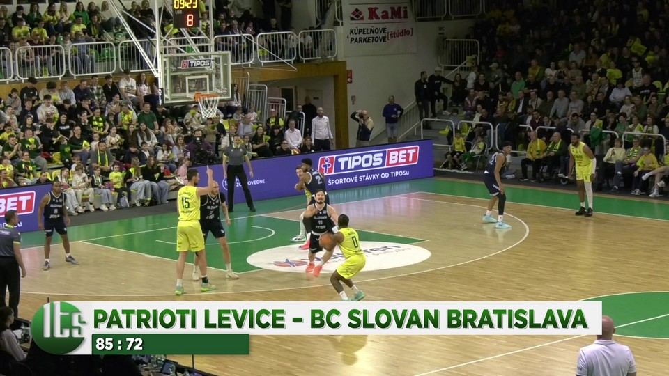
playPatrioti Levice – BC Slovan Bratislava 85 : 72
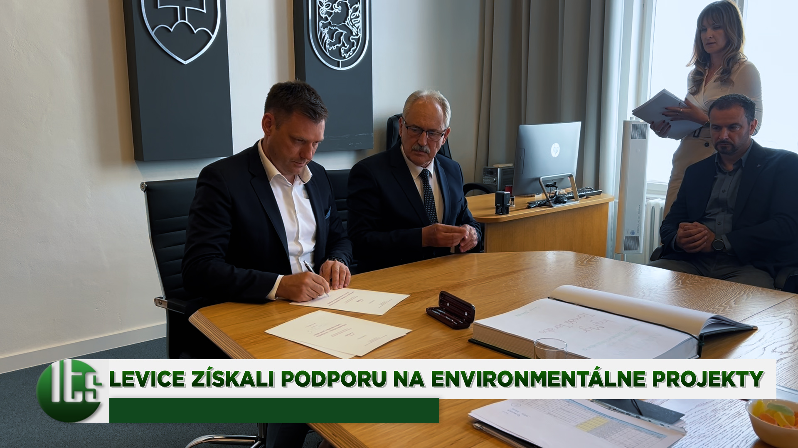
playLevice získali podporu na environmentálne projekty
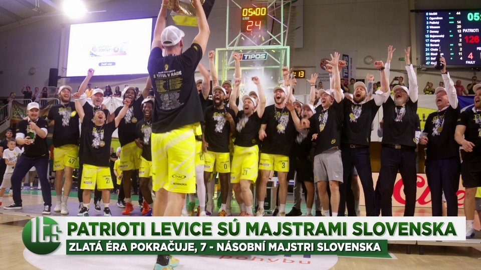
playPatrioti Levice sú majstrami Slovenska 2026
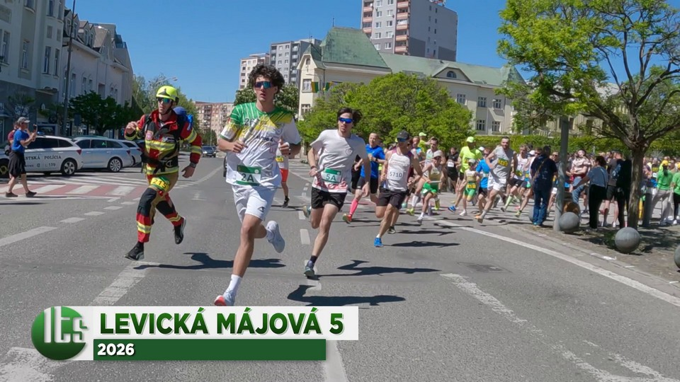
playLevická májová 5, 2026
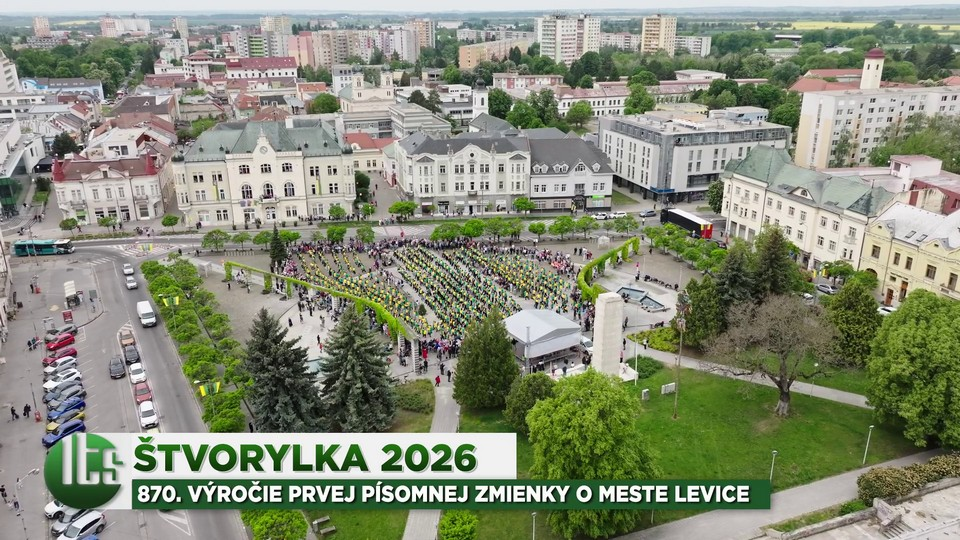
playŠtvorylka 2026
1919. plánované zasadnutie mestského zastupiteľstva v Leviciach - Záznam
1818. plánované zasadnutie mestského zastupiteľstva v Leviciach - Záznam
1717. plánované zasadnutie MsZ v Leviciach - záznam
077. mimoriadne zasadnutie MsZ v Leviciach
Náš tím
Ľudia za obrazom a zvukom Levickej televízie
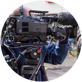
Informácie
Ako si nás naladiť
Vysielacia štruktúra
Každý deň 18 hodín vysielania
Časový rozsah vysielania: od 6:00 hod. do 24:00 hod. - jedna hodinová opakujúca sa slučka v uvedenom časovom rozsahu.
Programová skladba č. 1
Reklama 12 min
Spravodajstvo 20 min
Šport 8 min
Publicistika 10 min
Informačný servis 10 min
Programová skladba č. 2
Vysielané o 9:00, 10:00, 17:00, 18:00
Reklama 12 min
Spravodajstvo 20 min
Šport 8 min
Informačný servis 20 min
Administratíva
Zoznam povinne zverejňovaných dokumentov
Všetky zmluvy a faktúry sú k dispozícii k nahliadnutiu a na stiahnutie vo formáte PDF.
Faktúry
Prehľad zverejnených faktúr podľa rokov.
Objednávky
Zverejnené objednávky a súvisiace dokumenty.
Zmluvy
Prehľad zmlúv zverejňovaných v rámci administratívy spoločnosti.
Správy o činnosti
Ročné správy a dokumenty k činnosti Levickej televíznej spoločnosti.
Cenník reklamy
Reklamný priestor v lokálnej televízii
Videotext
Prezentačné farebné strany vo vysielaní s hudbou alebo nahovoreným textom.
od 10,50 € / deň 15 sekúnd, 18 odvysielaníReklamné spoty
Výroba spotu 15 - 30 sekúnd alebo vysielanie existujúceho reklamného spotu.
od 15,75 € / deň 15 sekúnd / 1 deňReklamný rozhovor
Výroba a vysielanie v jednej cene, štandardne 7 po sebe nasledujúcich dní.
od 189,00 € 1,00 - 2,00 minúty bez DPHObjednávky reklám zabezpečuje Ľubica Lukáčová.
0903 586 677 036 630 8420 lukacova@levickatelevizia.skKontakt
Sme dostupní pre divákov, redakciu aj reklamu
Levická televízna spoločnosť s.r.o., CK Junior, A. Sládkoviča 2, Levice.
Fakturačné údaje
Levická televízna spoločnosť s.r.o., Nám. hrdinov 1, 934 01 Levice. Právna forma: spoločnosť s ručením obmedzeným.
IČO: 365 45 112
DIČ: 2021605927
IČ pre DPH: SK2021605927
IBAN: SK12 0900 0000 0050 7073 9583
Zapísaná v obchodnom registri Okresného súdu v Nitre: Oddiel Sro, vložka číslo: 12963/N.